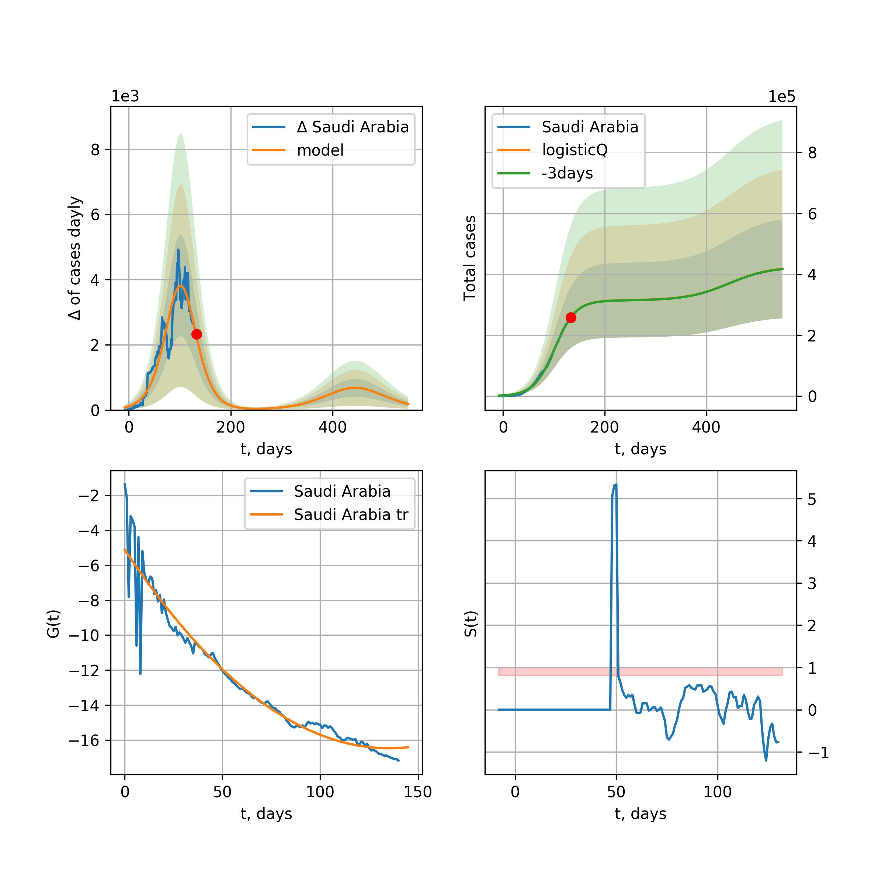
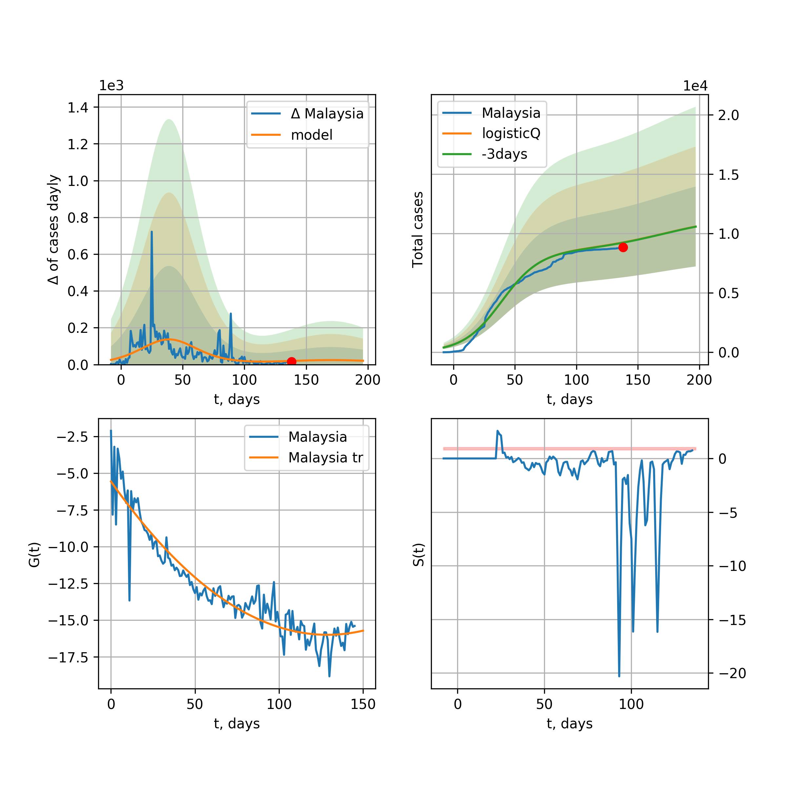

Multi-logistic model of COVID-19 dynamics
Model, code, results
Project maintained by algmaknick Hosted on GitHub Pages — Theme by mattgraham
World

World data at: 2020-05-13
+3 day model MAPE: 0.037573
model: tri-logisticQ
coeffs: [ 4.44113616e+06 1.04545145e-06 7.60961888e+01 -8.81737917e+04]
S.Korea scenario coeffs: [0.35416971, 0.02606324, 4.35859408, 19.30413219]
rational stdev: 0.195899
forecast at the end of period: +304 days
deltaDaycases: 2429
total cases: 6154631 ± 1205687
total death: 414273 ± 243467
tri-logisticQ approximation splitting points: 26,54
trend coefficient of determination: 0.957216
intercept_: -9.890425229004336
coeffs_: [ 0. -0.26614025 0.00124975]
trend1 coefficient of determination: 0.900515
intercept_: -20.622215746086294
coeffs_: [ 0. 0.23801537 -0.00236922]
trend coefficient of determination: 0.992811
intercept_: -3.0163042321912723
coeffs_: [ 0. -0.28741097 0.00127655]
European Union

European Union data at: 2020-05-13
+3 day model MAPE: 0.013130
model: logisticQ
coeffs: [ 1.08302772e+06 7.50724729e-07 4.95533131e+01 -1.55133768e+05]
S.Korea scenario coeffs: [0.35416971, 0.02606324, 4.35859408, 19.30413219]
rational stdev: 0.428704
forecast at the end of period: +199 days
deltaDaycases: 369
total cases: 1460369 ± 626065
total death: 154614 ± 198850
trend coefficient of determination: 0.988341
intercept_: -3.0146252311961703
coeffs_: [ 0. -0.32829461 0.00168868]
USA

USA data at: 2020-05-13
+3 day model MAPE: 0.009256
model: Richards
coeffs: [ 1.82130570e+06 4.25048576e+00 -4.93776324e+01 1.19179066e-02]
S.Korea scenario coeffs: [0.36242246, 2.56241634, 1.84890887, 0.13324732]
rational stdev: 0.286646
forecast at the end of period: +346 days
deltaDaycases: 1098
total cases: 2414887 ± 692217
total death: 143839 ± 123692
trend coefficient of determination: 0.945353
intercept: -0.981767
slope: -0.047411
Spain

Spain data at: 2020-05-13
+3 day model MAPE: 0.011432
model: Richards
coeffs: [ 2.82218051e+05 7.65818879e+00 -4.43115501e+01 8.58381979e-03]
S.Korea scenario coeffs: [0.36242246, 2.56241634, 1.84890887, 0.13324732]
rational stdev: 0.190418
forecast at the end of period: +304 days
deltaDaycases: 72
total cases: 381264 ± 72599
total death: 38118 ± 21775
trend coefficient of determination: 0.943348
intercept: -0.785378
slope: -0.058838
Italy

Italy data at: 2020-05-13
+3 day model MAPE: 0.002282
model: Richards
coeffs: [ 2.34019747e+05 5.36200324e+00 -4.76486385e+01 1.13687034e-02]
S.Korea scenario coeffs: [0.36242246, 2.56241634, 1.84890887, 0.13324732]
rational stdev: 0.075310
forecast at the end of period: +276 days
deltaDaycases: 124
total cases: 312670 ± 23547
total death: 43789 ± 9893
trend coefficient of determination: 0.981084
intercept: -1.094651
slope: -0.057289
United Kingdom

United Kingdom data at: 2020-05-13
+3 day model MAPE: 0.010948
model: Richards
coeffs: [ 3.02593002e+05 3.62660869e+00 -5.35713250e+01 1.36799855e-02]
S.Korea scenario coeffs: [0.36242246, 2.56241634, 1.84890887, 0.13324732]
rational stdev: 0.104862
forecast at the end of period: +374 days
deltaDaycases: 118
total cases: 405050 ± 42474
total death: 58518 ± 18408
trend coefficient of determination: 0.927808
intercept: -1.400489
slope: -0.044529
France

France data at: 2020-05-13
+3 day model MAPE: 0.005461
model: Richards
coeffs: [1.77328689e+05 2.61672164e-01 2.31001160e+01 4.21513258e-01]
S.Korea scenario coeffs: [0.36242246, 2.56241634, 1.84890887, 0.13324732]
rational stdev: 0.181351
forecast at the end of period: +136 days
deltaDaycases: 89
total cases: 239202 ± 43379
total death: 36370 ± 19787
trend coefficient of determination: 0.951992
intercept: -3.219856
slope: -0.107961
Germany

Germany data at: 2020-05-13
+3 day model MAPE: 0.004388
model: Richards
coeffs: [ 1.75121666e+05 7.75948187e+00 -3.64635925e+01 1.09624094e-02]
S.Korea scenario coeffs: [0.36242246, 2.56241634, 1.84890887, 0.13324732]
rational stdev: 0.929404
forecast at the end of period: +206 days
deltaDaycases: 74
total cases: 236014 ± 219352
total death: 10656 ± 29711
trend coefficient of determination: 0.953008
intercept: -1.120770
slope: -0.070376
Turkey

Turkey data at: 2020-05-13
+3 day model MAPE: 0.007994
model: Richards
coeffs: [ 1.54326270e+05 1.58754010e+00 -1.23122565e+01 5.00370789e-02]
S.Korea scenario coeffs: [0.36242246, 2.56241634, 1.84890887, 0.13324732]
rational stdev: 0.248435
forecast at the end of period: +196 days
deltaDaycases: 122
total cases: 205597 ± 51077
total death: 5677 ± 4231
trend coefficient of determination: 0.747872
intercept: -1.156389
slope: -0.064316
Russia

Russia data at: 2020-05-13
+3 day model MAPE: 0.002326
model: Richards
coeffs: [ 9.94825906e+05 1.01596184e+00 -3.77224958e+01 3.50814922e-02]
S.Korea scenario coeffs: [0.36242246, 2.56241634, 1.84890887, 0.13324732]
rational stdev: 0.065098
forecast at the end of period: +654 days
deltaDaycases: 79
total cases: 1348840 ± 87807
total death: 12315 ± 2405
trend coefficient of determination: 0.901760
intercept: -1.746936
slope: -0.031518
Iran

Iran data at: 2020-05-13
+3 day model MAPE: 0.025420
model: Richards
coeffs: [ 1.18601414e+05 7.50974520e-01 -1.52415588e+01 7.19565285e-02]
S.Korea scenario coeffs: [0.36242246, 2.56241634, 1.84890887, 0.13324732]
rational stdev: 0.293210
forecast at the end of period: +206 days
deltaDaycases: 192
total cases: 149180 ± 43741
total death: 8976 ± 7895
trend coefficient of determination: 0.912430
intercept: -1.466624
slope: -0.053712
Brazil

Brazil data at: 2020-05-13
+3 day model MAPE: 0.012391
model: logisticQ
coeffs: [ 4.46474416e+05 8.86590840e-06 6.74785497e+01 -9.83106153e+03]
S.Korea scenario coeffs: [0.35416971, 0.02606324, 4.35859408, 19.30413219]
rational stdev: 0.405312
forecast at the end of period: +339 days
deltaDaycases: 58
total cases: 603292 ± 244521
total death: 42009 ± 51080
trend coefficient of determination: 0.866435
intercept_: -4.052598314149689
coeffs_: [ 0. -0.29556676 0.00205999]
Canada

Canada data at: 2020-05-13
+3 day model MAPE: 0.001020
model: Richards
coeffs: [ 1.06503695e+05 2.62354801e+00 -6.28993793e+01 1.67226307e-02]
S.Korea scenario coeffs: [0.36242246, 2.56241634, 1.84890887, 0.13324732]
rational stdev: 0.183987
forecast at the end of period: +420 days
deltaDaycases: 36
total cases: 142608 ± 26238
total death: 10461 ± 5774
trend coefficient of determination: 0.944723
intercept: -1.532888
slope: -0.047765
Belgium

Belgium data at: 2020-05-13
+3 day model MAPE: 0.001068
model: Richards
coeffs: [ 5.78680544e+04 7.42482106e-01 -7.42423082e+00 9.91670869e-02]
S.Korea scenario coeffs: [0.36242246, 2.56241634, 1.84890887, 0.13324732]
rational stdev: 0.332610
forecast at the end of period: +206 days
deltaDaycases: 33
total cases: 77485 ± 25772
total death: 12693 ± 12665
trend coefficient of determination: 0.941955
intercept: -1.760098
slope: -0.066806
Peru

Peru data at: 2020-05-13
+3 day model MAPE: 0.009866
model: logisticQ
coeffs: [ 1.12341429e+05 5.84033636e-06 5.24304371e+01 -1.86703604e+04]
S.Korea scenario coeffs: [0.35416971, 0.02606324, 4.35859408, 19.30413219]
rational stdev: 0.358836
forecast at the end of period: +248 days
deltaDaycases: 29
total cases: 151601 ± 54400
total death: 4309 ± 4638
trend coefficient of determination: 0.970331
intercept_: -3.681824380068387
coeffs_: [ 0. -0.28315117 0.00188972]
Netherlands

Netherlands data at: 2020-05-13
+3 day model MAPE: 0.002589
model: Richards
coeffs: [4.61922341e+04 4.62962655e-01 3.27711662e+00 1.58557169e-01]
S.Korea scenario coeffs: [0.36242246, 2.56241634, 1.84890887, 0.13324732]
rational stdev: 0.167194
forecast at the end of period: +206 days
deltaDaycases: 24
total cases: 61954 ± 10358
total death: 7974 ± 3999
trend coefficient of determination: 0.975687
intercept: -1.646151
slope: -0.075544
India

India data at: 2020-05-13
+3 day model MAPE: 0.012737
model: Richards
coeffs: [ 1.07799670e+06 8.26475379e-01 -6.77250919e+01 2.45197093e-02]
S.Korea scenario coeffs: [0.36242246, 2.56241634, 1.84890887, 0.13324732]
rational stdev: 0.331463
forecast at the end of period: +934 days
deltaDaycases: 303
total cases: 1422019 ± 471346
total death: 46435 ± 46174
trend coefficient of determination: 0.429816
intercept: -1.710724
slope: -0.021353
Switzerland

Switzerland data at: 2020-05-13
+3 day model MAPE: 0.004535
model: logisticQ
coeffs: [ 2.96356648e+04 9.36535692e-07 2.56638942e+01 -1.58887553e+05]
S.Korea scenario coeffs: [0.35416971, 0.02606324, 4.35859408, 19.30413219]
rational stdev: 0.351837
forecast at the end of period: +94 days
deltaDaycases: 15
total cases: 39924 ± 14046
total death: 2454 ± 2590
trend coefficient of determination: 0.985289
intercept_: -3.6544384113181128
coeffs_: [ 0. -0.33242694 0.00215474]
Ecuador

Ecuador data at: 2020-05-13
+3 day model MAPE: 0.037311
model: logisticQ
coeffs: [ 4.05383996e+04 8.75979862e-07 4.21407525e+01 -8.65696908e+04]
S.Korea scenario coeffs: [0.35416971, 0.02606324, 4.35859408, 19.30413219]
rational stdev: 0.364490
forecast at the end of period: +234 days
deltaDaycases: 9
total cases: 54651 ± 19920
total death: 4184 ± 4575
trend coefficient of determination: 0.703750
intercept_: -5.473792474257948
coeffs_: [ 0. -0.3106887 0.00269588]
Portugal

Portugal data at: 2020-05-13
+3 day model MAPE: 0.007947
model: Richards
coeffs: [ 2.95357796e+04 6.85605513e+00 -3.84268698e+01 1.03206893e-02]
S.Korea scenario coeffs: [0.36242246, 2.56241634, 1.84890887, 0.13324732]
rational stdev: 0.385823
forecast at the end of period: +234 days
deltaDaycases: 23
total cases: 39244 ± 15141
total death: 1639 ± 1897
trend coefficient of determination: 0.893813
intercept: -0.756505
slope: -0.063286
Saudi Arabia

Saudi Arabia data at: 2020-05-13
+3 day model MAPE: 0.040659
model: logisticQ
coeffs: [ 6.49603491e+04 6.11757963e-06 5.59853693e+01 -1.71161810e+04]
S.Korea scenario coeffs: [0.35416971, 0.02606324, 4.35859408, 19.30413219]
rational stdev: 0.335678
forecast at the end of period: +206 days
deltaDaycases: 205
total cases: 83106 ± 27896
total death: 506 ± 509
trend coefficient of determination: 0.833396
intercept_: -4.356135026706695
coeffs_: [ 0. -0.22811702 0.00139401]
Sweden

Sweden data at: 2020-05-13
+3 day model MAPE: 0.004080
model: Richards
coeffs: [ 4.33975471e+04 1.34864771e+00 -4.57029330e+01 2.79853038e-02]
S.Korea scenario coeffs: [0.36242246, 2.56241634, 1.84890887, 0.13324732]
rational stdev: 0.272696
forecast at the end of period: +444 days
deltaDaycases: 21
total cases: 57348 ± 15638
total death: 7109 ± 5815
trend coefficient of determination: 0.816766
intercept: -1.391632
slope: -0.039689
Pakistan

Pakistan data at: 2020-05-13
+3 day model MAPE: 0.010298
model: Richards
coeffs: [ 4.73826893e+05 4.89052373e-01 -5.79454179e+01 3.68149466e-02]
S.Korea scenario coeffs: [0.36242246, 2.56241634, 1.84890887, 0.13324732]
rational stdev: 0.413337
forecast at the end of period: +1214 days
deltaDaycases: 42
total cases: 638509 ± 263919
total death: 13737 ± 17034
trend coefficient of determination: 0.166507
intercept: -2.193701
slope: -0.016865
Ireland

Ireland data at: 2020-05-13
+3 day model MAPE: 0.005963
model: logisticQ
coeffs: [ 2.36174529e+04 4.94386323e-06 3.47955793e+01 -2.65858983e+04]
S.Korea scenario coeffs: [0.35416971, 0.02606324, 4.35859408, 19.30413219]
rational stdev: 0.327990
forecast at the end of period: +136 days
deltaDaycases: 22
total cases: 31632 ± 10375
total death: 2023 ± 1990
trend coefficient of determination: 0.982113
intercept_: -3.705512977993445
coeffs_: [ 0. -0.28386927 0.00177355]
Mexico

Mexico data at: 2020-05-13
+3 day model MAPE: 0.016031
model: Richards
coeffs: [1.97898258e+05 2.38864625e-01 6.60431596e+00 1.40251396e-01]
S.Korea scenario coeffs: [0.36242246, 2.56241634, 1.84890887, 0.13324732]
rational stdev: 0.133794
forecast at the end of period: +794 days
deltaDaycases: 3
total cases: 269331 ± 36035
total death: 28282 ± 11351
trend coefficient of determination: 0.896297
intercept: -2.496373
slope: -0.039557
Singapore

Singapore data at: 2020-05-13
+3 day model MAPE: 0.053730
model: bi-logisticQ
coeffs: [ 2.63383453e+04 3.72379752e-06 8.64464294e+01 -3.76924460e+04]
S.Korea scenario coeffs: [0.35416971, 0.02606324, 4.35859408, 19.30413219]
rational stdev: 0.269560
forecast at the end of period: +94 days
deltaDaycases: 0
total cases: 26437 ± 7126
total death: 21 ± 16
bi-logisticQ approximation splitting point: 35
trend coefficient of determination: 0.914568
intercept_: -2.036640634366525
coeffs_: [ 0. -0.39517788 0.00592335]
trend coefficient of determination: 0.920080
intercept_: -8.925834140970373
coeffs_: [ 0. 0.05810654 -0.00097213]
Chile

Chile data at: 2020-05-13
+3 day model MAPE: 0.049631
model: Richards
coeffs: [ 1.61971830e+06 3.66246358e-01 -9.38789699e+01 3.39878959e-02]
S.Korea scenario coeffs: [0.36242246, 2.56241634, 1.84890887, 0.13324732]
rational stdev: 0.419739
forecast at the end of period: +1704 days
deltaDaycases: 136
total cases: 2173766 ± 912415
total death: 21876 ± 27546
trend coefficient of determination: 0.011219
intercept: -2.777161
slope: -0.007920
Israel

Israel data at: 2020-05-13
+3 day model MAPE: 0.002831
model: Richards
coeffs: [ 1.71750179e+04 6.66781104e+00 -3.80599460e+01 1.30689231e-02]
S.Korea scenario coeffs: [0.36242246, 2.56241634, 1.84890887, 0.13324732]
rational stdev: 0.142253
forecast at the end of period: +206 days
deltaDaycases: 5
total cases: 23204 ± 3300
total death: 370 ± 157
trend coefficient of determination: 0.900809
intercept: -1.074150
slope: -0.089432
Austria

Austria data at: 2020-05-13
+3 day model MAPE: 0.005645
model: logisticQ
coeffs: [ 1.53041584e+04 1.07529767e-06 2.34589744e+01 -1.81320400e+05]
S.Korea scenario coeffs: [0.35416971, 0.02606324, 4.35859408, 19.30413219]
rational stdev: 0.322060
forecast at the end of period: +80 days
deltaDaycases: 5
total cases: 20669 ± 6656
total death: 806 ± 778
trend coefficient of determination: 0.980517
intercept_: -2.7768849482141604
coeffs_: [ 0. -0.35481361 0.00241816]
Belarus

Belarus data at: 2020-05-13
+3 day model MAPE: 0.004579
model: Richards
coeffs: [ 5.30154300e+04 1.54318029e+00 -4.36127859e+01 3.11645922e-02]
S.Korea scenario coeffs: [0.36242246, 2.56241634, 1.84890887, 0.13324732]
rational stdev: 0.133277
forecast at the end of period: +374 days
deltaDaycases: 22
total cases: 70794 ± 9435
total death: 400 ± 159
trend coefficient of determination: 0.816856
intercept: -1.714298
slope: -0.046648
Japan

Japan data at: 2020-05-13
+3 day model MAPE: 0.010474
model: Richards
coeffs: [1.59856234e+04 1.03586513e-01 7.88060652e+01 1.46934075e+00]
S.Korea scenario coeffs: [0.36242246, 2.56241634, 1.84890887, 0.13324732]
rational stdev: 0.684835
forecast at the end of period: +164 days
deltaDaycases: 2
total cases: 21728 ± 14880
total death: 917 ± 1883
trend coefficient of determination: 0.785863
intercept: -6.873001
slope: -0.113903
Qatar

Qatar data at: 2020-05-13
+3 day model MAPE: 0.086671
model: bi-logisticQ
coeffs: [ 2.75122094e+04 3.15815198e-06 5.61749031e+01 -3.66200267e+04]
S.Korea scenario coeffs: [0.35416971, 0.02606324, 4.35859408, 19.30413219]
rational stdev: 0.318075
forecast at the end of period: +220 days
deltaDaycases: 56
total cases: 47912 ± 15239
total death: 25 ± 23
bi-logisticQ approximation splitting point: 31
trend coefficient of determination: 0.919409
intercept_: -1.6852707465713292
coeffs_: [ 0. -0.86529683 0.02183056]
trend coefficient of determination: 0.957757
intercept_: -6.2160538524637055
coeffs_: [ 0. -0.13088953 0.00039916]
Poland

Poland data at: 2020-05-13
+3 day model MAPE: 0.021792
model: Richards
coeffs: [ 2.19608655e+04 3.87438019e+00 -5.57851102e+01 1.24120407e-02]
S.Korea scenario coeffs: [0.36242246, 2.56241634, 1.84890887, 0.13324732]
rational stdev: 0.251874
forecast at the end of period: +346 days
deltaDaycases: 15
total cases: 28901 ± 7279
total death: 1446 ± 1092
trend coefficient of determination: 0.762944
intercept: -1.236173
slope: -0.044300
UAE

UAE data at: 2020-05-13
+3 day model MAPE: 0.029631
model: Richards
coeffs: [ 3.94032593e+04 2.19276361e+00 -7.08604124e+01 1.80378773e-02]
S.Korea scenario coeffs: [0.36242246, 2.56241634, 1.84890887, 0.13324732]
rational stdev: 0.112095
forecast at the end of period: +458 days
deltaDaycases: 15
total cases: 52518 ± 5887
total death: 530 ± 178
trend coefficient of determination: 0.819752
intercept: -1.934309
slope: -0.038615
Romania

Romania data at: 2020-05-13
+3 day model MAPE: 0.009721
model: Richards
coeffs: [ 2.06657505e+04 4.38615791e+00 -5.69026749e+01 1.12286528e-02]
S.Korea scenario coeffs: [0.36242246, 2.56241634, 1.84890887, 0.13324732]
rational stdev: 0.148625
forecast at the end of period: +346 days
deltaDaycases: 13
total cases: 27299 ± 4057
total death: 1767 ± 787
trend coefficient of determination: 0.874668
intercept: -1.252535
slope: -0.045807
Ukraine

Ukraine data at: 2020-05-13
+3 day model MAPE: 0.001048
model: Richards
coeffs: [2.42092028e+04 2.24573030e-01 1.83824443e+01 2.96538983e-01]
S.Korea scenario coeffs: [0.36242246, 2.56241634, 1.84890887, 0.13324732]
rational stdev: 0.266342
forecast at the end of period: +234 days
deltaDaycases: 15
total cases: 32276 ± 8596
total death: 862 ± 688
trend coefficient of determination: 0.804138
intercept: -2.530544
slope: -0.074362
Indonesia

Indonesia data at: 2020-05-13
+3 day model MAPE: 0.015588
model: Richards
coeffs: [ 2.81915135e+04 1.87339146e+00 -7.07855235e+01 1.92909098e-02]
S.Korea scenario coeffs: [0.36242246, 2.56241634, 1.84890887, 0.13324732]
rational stdev: 0.118065
forecast at the end of period: +402 days
deltaDaycases: 27
total cases: 35844 ± 4231
total death: 2386 ± 845
trend coefficient of determination: 0.836647
intercept: -1.840160
slope: -0.036908
Bangladesh

Bangladesh data at: 2020-05-13
+3 day model MAPE: 0.121997
model: bi-logisticQ
coeffs: [ 1.52576917e+04 4.82282721e-06 4.47207282e+01 -3.35831063e+04]
S.Korea scenario coeffs: [0.35416971, 0.02606324, 4.35859408, 19.30413219]
rational stdev: 0.301595
forecast at the end of period: +38 days
deltaDaycases: 2
total cases: 15299 ± 4614
total death: 230 ± 208
bi-logisticQ approximation splitting point: 25
trend coefficient of determination: 0.232653
intercept_: -6.325425729788838
coeffs_: [ 0. 0.22449345 -0.0150245 ]
trend coefficient of determination: 0.980575
intercept_: 3.92534182185733
coeffs_: [ 0. -0.4635868 0.00319602]
South_Korea

South Korea data at: 2020-05-13
+3 day model MAPE: 0.002152
model: bi-Richards
coeffs: [ 2.92944712e+03 1.58324144e-01 -4.16865254e+01 -4.29217465e+02 1.31730192e-03]
rational stdev: 0.122994
forecast at the end of period: +10 days
deltaDaycases: 0
total cases: 10833 ± 1332
total death: 256 ± 94
bi-logisticQ approximation splitting point: 25
trend coefficient of determination: 0.936460
intercept: -5.478818
slope: -0.338423
trend coefficient of determination: 0.622388
intercept: -11.785974
slope: -0.059376
Denmark

Denmark data at: 2020-05-13
+3 day model MAPE: 0.010024
model: Richards
coeffs: [1.17339784e+04 3.07279541e-01 5.29797372e+00 1.98615445e-01]
S.Korea scenario coeffs: [0.36242246, 2.56241634, 1.84890887, 0.13324732]
rational stdev: 0.371775
forecast at the end of period: +206 days
deltaDaycases: 11
total cases: 15382 ± 5718
total death: 768 ± 856
trend coefficient of determination: 0.871148
intercept: -2.039144
slope: -0.065621
Serbia

Serbia data at: 2020-05-13
+3 day model MAPE: 0.006915
model: logisticQ
coeffs: [ 1.03931664e+04 2.20267339e-06 2.92315534e+01 -6.26944186e+04]
S.Korea scenario coeffs: [0.35416971, 0.02606324, 4.35859408, 19.30413219]
rational stdev: 0.280223
forecast at the end of period: +136 days
deltaDaycases: 2
total cases: 14033 ± 3932
total death: 302 ± 253
trend coefficient of determination: 0.973345
intercept_: -4.067908116345499
coeffs_: [ 0. -0.26052813 0.00158092]
Philippines

Philippines data at: 2020-05-13
+3 day model MAPE: 0.030917
model: Richards
coeffs: [ 1.46121356e+04 5.32229824e+00 -7.32234264e+01 8.81802002e-03]
S.Korea scenario coeffs: [0.36242246, 2.56241634, 1.84890887, 0.13324732]
rational stdev: 0.307843
forecast at the end of period: +430 days
deltaDaycases: 3
total cases: 19695 ± 6063
total death: 1308 ± 1207
trend coefficient of determination: 0.648299
intercept: -1.530944
slope: -0.045695
Norway

Norway data at: 2020-05-13
+3 day model MAPE: 0.003866
model: Richards
coeffs: [ 8.25003205e+03 1.51612546e+00 -1.78016237e+01 5.18316230e-02]
S.Korea scenario coeffs: [0.36242246, 2.56241634, 1.84890887, 0.13324732]
rational stdev: 0.195531
forecast at the end of period: +206 days
deltaDaycases: 2
total cases: 11130 ± 2176
total death: 311 ± 182
trend coefficient of determination: 0.932128
intercept: -1.029633
slope: -0.074787
Czechia

Czechia data at: 2020-05-13
+3 day model MAPE: 0.011073
model: logisticQ
coeffs: [ 7.89065747e+03 7.98074798e-07 2.52024266e+01 -1.71513048e+05]
S.Korea scenario coeffs: [0.35416971, 0.02606324, 4.35859408, 19.30413219]
rational stdev: 0.340750
forecast at the end of period: +94 days
deltaDaycases: 6
total cases: 10593 ± 3609
total death: 371 ± 379
trend coefficient of determination: 0.919920
intercept_: -3.930340216814497
coeffs_: [ 0. -0.28702314 0.00198918]
Colombia

Colombia data at: 2020-05-13
+3 day model MAPE: 0.039043
model: Richards
coeffs: [ 2.43769428e+05 5.80527598e-01 -1.10561521e+02 2.60679237e-02]
S.Korea scenario coeffs: [0.36242246, 2.56241634, 1.84890887, 0.13324732]
rational stdev: 0.331507
forecast at the end of period: +1354 days
deltaDaycases: 29
total cases: 326258 ± 108156
total death: 12843 ± 12772
trend coefficient of determination: 0.654065
intercept: -1.528598
slope: -0.036186
Australia

Australia data at: 2020-05-13
+3 day model MAPE: 0.003459
model: logisticQ
coeffs: [ 6.73707014e+03 2.02063686e-06 1.82908676e+01 -1.09940643e+05]
S.Korea scenario coeffs: [0.35416971, 0.02606324, 4.35859408, 19.30413219]
rational stdev: 0.137353
forecast at the end of period: +80 days
deltaDaycases: 0
total cases: 9121 ± 1252
total death: 127 ± 52
trend coefficient of determination: 0.971421
intercept_: -4.536357204891088
coeffs_: [ 0. -0.29379961 0.00198522]
Malaysia

Malaysia data at: 2020-05-13
+3 day model MAPE: 0.015816
model: logisticQ
coeffs: [ 6.45080298e+03 8.85702414e-07 2.88881767e+01 -1.34631791e+05]
S.Korea scenario coeffs: [0.35416971, 0.02606324, 4.35859408, 19.30413219]
rational stdev: 0.333117
forecast at the end of period: +129 days
deltaDaycases: 1
total cases: 8703 ± 2899
total death: 142 ± 141
trend coefficient of determination: 0.860539
intercept_: -4.417936087837437
coeffs_: [ 0. -0.24921378 0.00166504]
Egypt

Egypt data at: 2020-05-13
+3 day model MAPE: 0.020247
model: logisticQ
coeffs: [ 2.14158091e+04 1.71303728e-05 4.87596083e+01 -4.26998711e+03]
S.Korea scenario coeffs: [0.35416971, 0.02606324, 4.35859408, 19.30413219]
rational stdev: 0.171875
forecast at the end of period: +192 days
deltaDaycases: 55
total cases: 26981 ± 4637
total death: 1438 ± 741
trend coefficient of determination: 0.949553
intercept_: -7.569256674578259
coeffs_: [ 0. -0.13066309 0.00077749]
Finland

Finland data at: 2020-05-13
+3 day model MAPE: 0.000696
model: Richards
coeffs: [ 7.68283523e+03 3.05765506e+00 -6.25443864e+01 1.50578398e-02]
S.Korea scenario coeffs: [0.36242246, 2.56241634, 1.84890887, 0.13324732]
rational stdev: 0.174180
forecast at the end of period: +318 days
deltaDaycases: 7
total cases: 9934 ± 1730
total death: 466 ± 243
trend coefficient of determination: 0.829751
intercept: -1.489111
slope: -0.050207
Morocco

Morocco data at: 2020-05-13
+3 day model MAPE: 0.045847
model: logisticQ
coeffs: [ 7.12987339e+03 1.73822702e-06 3.17471175e+01 -5.80238123e+04]
S.Korea scenario coeffs: [0.35416971, 0.02606324, 4.35859408, 19.30413219]
rational stdev: 0.273661
forecast at the end of period: +122 days
deltaDaycases: 16
total cases: 9283 ± 2540
total death: 268 ± 220
trend coefficient of determination: 0.970762
intercept_: -4.956385097904024
coeffs_: [ 0. -0.24897788 0.0020902 ]
Argentina

Argentina data at: 2020-05-13
+3 day model MAPE: 0.056983
model: Richards
coeffs: [ 1.37640806e+04 2.44292260e+00 -1.02787936e+02 1.20051511e-02]
S.Korea scenario coeffs: [0.36242246, 2.56241634, 1.84890887, 0.13324732]
rational stdev: 0.300670
forecast at the end of period: +584 days
deltaDaycases: 6
total cases: 18049 ± 5426
total death: 863 ± 778
trend coefficient of determination: 0.033058
intercept: -2.649590
slope: -0.017754
Algeria

Algeria data at: 2020-05-13
+3 day model MAPE: 0.038480
model: logisticQ
coeffs: [ 8.62089042e+03 1.61343050e-06 3.81577979e+01 -4.50059223e+04]
S.Korea scenario coeffs: [0.35416971, 0.02606324, 4.35859408, 19.30413219]
rational stdev: 0.278637
forecast at the end of period: +150 days
deltaDaycases: 19
total cases: 10984 ± 3060
total death: 916 ± 765
trend coefficient of determination: 0.941978
intercept_: -6.334584288960844
coeffs_: [ 0. -0.20581858 0.00187184]
Luxembourg

Luxembourg data at: 2020-05-13
+3 day model MAPE: 0.003212
model: Richards
coeffs: [ 3.85046650e+03 2.17835945e+01 -3.52350384e+01 5.20841577e-03]
S.Korea scenario coeffs: [0.36242246, 2.56241634, 1.84890887, 0.13324732]
rational stdev: 0.414856
forecast at the end of period: +150 days
deltaDaycases: 1
total cases: 5197 ± 2156
total death: 137 ± 170
trend coefficient of determination: 0.600462
intercept: -1.546024
slope: -0.076872
Thailand

Thailand data at: 2020-05-13
+3 day model MAPE: 0.002193
model: Richards
coeffs: [ 2.99016173e+03 1.52136594e+01 -3.73871863e+01 8.14153166e-03]
S.Korea scenario coeffs: [0.36242246, 2.56241634, 1.84890887, 0.13324732]
rational stdev: 0.093899
forecast at the end of period: +122 days
deltaDaycases: 1
total cases: 4034 ± 378
total death: 74 ± 20
trend coefficient of determination: 0.854757
intercept: -1.106713
slope: -0.125193
Hungary

Hungary data at: 2020-05-13
+3 day model MAPE: 0.003569
model: logisticQ
coeffs: [ 3.53337572e+03 2.73781852e-06 3.41065723e+01 -4.07142682e+04]
S.Korea scenario coeffs: [0.35416971, 0.02606324, 4.35859408, 19.30413219]
rational stdev: 0.292795
forecast at the end of period: +150 days
deltaDaycases: 2
total cases: 4745 ± 1389
total death: 610 ± 535
trend coefficient of determination: 0.978731
intercept_: -3.435916323922414
coeffs_: [ 0. -0.23621053 0.00146573]
Greece

Greece data at: 2020-05-13
+3 day model MAPE: 0.008059
model: logisticQ
coeffs: [ 2.66236957e+03 9.16783164e-07 2.37845971e+01 -1.32140414e+05]
S.Korea scenario coeffs: [0.35416971, 0.02606324, 4.35859408, 19.30413219]
rational stdev: 0.273723
forecast at the end of period: +94 days
deltaDaycases: 1
total cases: 3575 ± 978
total death: 200 ± 164
trend coefficient of determination: 0.942679
intercept_: -3.3384446650622355
coeffs_: [ 0. -0.30073388 0.00228464]
Iraq

Iraq data at: 2020-05-13
+3 day model MAPE: 0.054955
model: bi-logisticQ
coeffs: [ 1.67795856e+03 4.64943056e-06 4.37738175e+01 -4.16498864e+04]
rational stdev: 0.073729
forecast at the end of period: +122 days
deltaDaycases: 0
total cases: 3173 ± 233
total death: 120 ± 26
bi-logisticQ approximation splitting point: 42
trend coefficient of determination: 0.938502
intercept_: -6.116864757771229
coeffs_: [ 0. -0.176838 0.00090835]
trend coefficient of determination: 0.329896
intercept_: -7.91251619036313
coeffs_: [ 0. -0.09931074 0.00063645]
Croatia

Croatia data at: 2020-05-13
+3 day model MAPE: 0.008620
model: logisticQ
coeffs: [ 2.13474955e+03 9.53782709e-07 2.68115938e+01 -1.48461345e+05]
S.Korea scenario coeffs: [0.35416971, 0.02606324, 4.35859408, 19.30413219]
rational stdev: 0.329181
forecast at the end of period: +108 days
deltaDaycases: 0
total cases: 2878 ± 947
total death: 122 ± 120
trend coefficient of determination: 0.979456
intercept_: -2.1909012717108336
coeffs_: [ 0. -0.28412599 0.00179329]
Iceland

Iceland data at: 2020-05-13
+3 day model MAPE: 0.000017
model: logisticQ
coeffs: [ 1.80200071e+03 9.31392777e-06 1.33196992e+01 -1.90259844e+04]
rational stdev: 0.063801
forecast at the end of period: +38 days
deltaDaycases: 0
total cases: 1802 ± 114
total death: 10 ± 1
trend coefficient of determination: 0.944320
intercept_: -5.708382284815495
coeffs_: [ 0.00000000e+00 -1.79351682e-01 8.85318644e-06]
Estonia

Estonia data at: 2020-05-13
+3 day model MAPE: 0.000237
model: Richards
coeffs: [1.76790468e+03 2.21535072e-01 2.57136751e+00 4.41790483e-01]
S.Korea scenario coeffs: [0.36242246, 2.56241634, 1.84890887, 0.13324732]
rational stdev: 0.128972
forecast at the end of period: +129 days
deltaDaycases: 0
total cases: 2381 ± 307
total death: 82 ± 31
trend coefficient of determination: 0.859043
intercept: -4.015208
slope: -0.096553
Bulgaria

Bulgaria data at: 2020-05-13
+3 day model MAPE: 0.002221
model: logisticQ
coeffs: [ 2.73830132e+03 3.60386910e-06 3.53206621e+01 -1.99141308e+04]
S.Korea scenario coeffs: [0.35416971, 0.02606324, 4.35859408, 19.30413219]
rational stdev: 0.169246
forecast at the end of period: +199 days
deltaDaycases: 1
total cases: 3678 ± 622
total death: 170 ± 86
trend coefficient of determination: 0.895595
intercept_: -6.075393020011708
coeffs_: [ 0. -0.17604457 0.00145274]
New Zealand

New Zealand data at: 2020-05-13
+3 day model MAPE: 0.002111
model: logisticQ
coeffs: [ 1.47240028e+03 3.26113231e-06 2.49218234e+01 -7.55897517e+04]
S.Korea scenario coeffs: [0.35416971, 0.02606324, 4.35859408, 19.30413219]
rational stdev: 0.334826
forecast at the end of period: +94 days
deltaDaycases: 0
total cases: 1993 ± 667
total death: 27 ± 27
trend coefficient of determination: 0.875090
intercept_: -3.8922665660237454
coeffs_: [ 0. -0.1463543 -0.00032931]
Slovenia

Slovenia data at: 2020-05-13
+3 day model MAPE: 0.003891
model: bi-logisticQ
coeffs: [ 1.21198087e+03 7.99371221e-07 1.92913166e+01 -1.90399012e+05]
S.Korea scenario coeffs: [0.35416971, 0.02606324, 4.35859408, 19.30413219]
rational stdev: 0.221282
forecast at the end of period: +80 days
deltaDaycases: 0
total cases: 1853 ± 410
total death: 130 ± 86
bi-logisticQ approximation splitting point: 10
trend coefficient of determination: 0.968209
intercept_: -2.53431844604435
coeffs_: [ 0. -0.45029183 -0.00732028]
trend coefficient of determination: 0.913360
intercept_: -6.522676300592283
coeffs_: [ 0. -0.13321195 0.00027013]
Slovakia

Slovakia data at: 2020-05-12
+3 day model MAPE: 0.001412
model: logisticQ
coeffs: [ 1.48394257e+03 5.87288682e-04 2.37777855e+01 -2.06691389e+02]
S.Korea scenario coeffs: [0.35416971, 0.02606324, 4.35859408, 19.30413219]
rational stdev: 0.268783
forecast at the end of period: +123 days
deltaDaycases: 0
total cases: 2004 ± 538
total death: 36 ± 29
trend coefficient of determination: 0.918006
intercept_: -3.3321697147391376
coeffs_: [ 0. -0.27565841 0.00190091]
Lithuania

Lithuania data at: 2020-05-13
+3 day model MAPE: 0.006207
model: Richards
coeffs: [ 1.52850062e+03 1.07189878e+01 -4.48937243e+01 7.60278715e-03]
S.Korea scenario coeffs: [0.36242246, 2.56241634, 1.84890887, 0.13324732]
rational stdev: 0.260219
forecast at the end of period: +209 days
deltaDaycases: 0
total cases: 2050 ± 533
total death: 73 ± 56
trend coefficient of determination: 0.892034
intercept: -0.727508
slope: -0.082537
Latvia

Latvia data at: 2020-05-12
+3 day model MAPE: 0.016744
model: logisticQ
coeffs: [ 9.04909722e+02 4.98190700e-07 1.98072032e+01 -2.31171810e+05]
S.Korea scenario coeffs: [0.35416971, 0.02606324, 4.35859408, 19.30413219]
rational stdev: 0.303068
forecast at the end of period: +81 days
deltaDaycases: 0
total cases: 1210 ± 366
total death: 22 ± 20
trend coefficient of determination: 0.765918
intercept_: -3.7510522721518953
coeffs_: [ 0. -0.26011267 0.00209241]
Cyprus

Cyprus data at: 2020-05-13
+3 day model MAPE: 0.001804
model: Richards
coeffs: [8.99927325e+02 2.65183699e-01 7.19657638e+00 4.33570451e-01]
S.Korea scenario coeffs: [0.36242246, 2.56241634, 1.84890887, 0.13324732]
rational stdev: 0.145449
forecast at the end of period: +94 days
deltaDaycases: 1
total cases: 1198 ± 174
total death: 22 ± 9
trend coefficient of determination: 0.775076
intercept: -3.088350
slope: -0.100876
Malta

Malta data at: 2020-05-13
+3 day model MAPE: 0.000579
model: Richards
coeffs: [4.93588796e+02 1.35675018e-01 1.83848813e+01 9.18537141e-01]
S.Korea scenario coeffs: [0.36242246, 2.56241634, 1.84890887, 0.13324732]
rational stdev: 0.216428
forecast at the end of period: +66 days
deltaDaycases: 1
total cases: 643 ± 139
total death: 7 ± 4
trend coefficient of determination: 0.825638
intercept: -4.394942
slope: -0.125340
Sri Lanka

Sri Lanka data at: 2020-05-13
+3 day model MAPE: 0.062838
model: bi-logisticQ
coeffs: [ 5.18033887e+02 4.95277952e-03 3.80543331e+01 -3.87676409e+01]
S.Korea scenario coeffs: [0.35416971, 0.02606324, 4.35859408, 19.30413219]
rational stdev: 0.261390
forecast at the end of period: +206 days
deltaDaycases: 0
total cases: 917 ± 239
total death: 9 ± 7
bi-logisticQ approximation splitting point: 35
trend coefficient of determination: 0.700900
intercept_: -1.7291427146735243
coeffs_: [ 0. -0.62059696 0.01251448]
trend coefficient of determination: 0.356970
intercept_: -45.35102800084556
coeffs_: [ 0. 1.68688112 -0.01943157]
References
- Worldometers COVID-19 Coronavirus Pandemic
- Su COVID-19 susijusi gyventojų ir verslo statistika
- Bi-logistic growth
- Least squares
- scikit-learn
- scipy.org
- European Centre for Disease Prevention and Control An agency of the European Union
- Aaron Miller, Mac Josh Reandelar, Kimberly Fasciglione, Violeta Roumenova, Yan Li, Gonzalo H Otazu, Correlation between universal BCG vaccination policy and reduced morbidity and mortality for COVID-19: an epidemiological study, https://doi.org/10.1101/2020.03.24.20042937